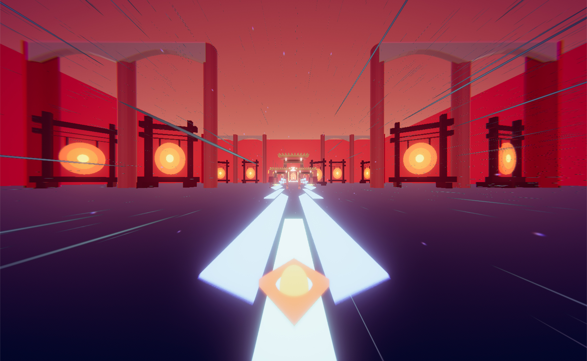

Sound Slide - Runner Musical

Job
Gameplay and Tools programmer.
Pitch
From a 3rd person view, the player controls a ship that automatically moves forward and has to move from one lane to another, in order to stay on the path to reach the end of the level. Music has a key role in Sound Slide, as its rhythm guides the player through the level design.
Challenges
The main intention for the game is to put the player in a state of flow. Which is a big challenge, because the level design has to be perfectly synched with the music in term of tempo, but also has to fit the mood of the music. We pay special attention to the difficulty in the game, which has to propose an interesting challenge for the player, without frustrate him.
We are also working on the visibility, because the players can't really see far lanes, and so they can't really anticipate. So we are working on the colors and on the camera, to make sure the path really stands out from the environment.
Team : 5
Loic Bourdrel, GD & SD
Erwann Depaeuw, Environment artist
Lucas Devillers, GD & LD
Thibault Hubert, GD & LD
Engine
Unity.